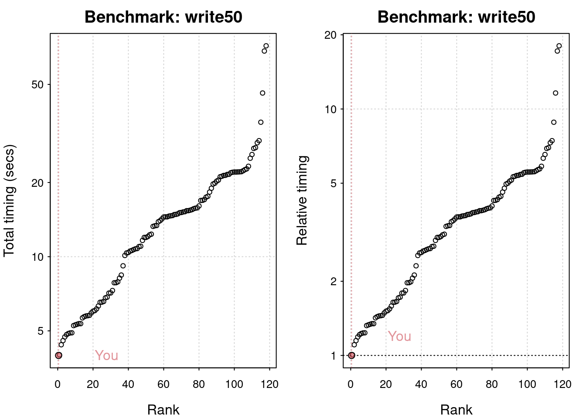
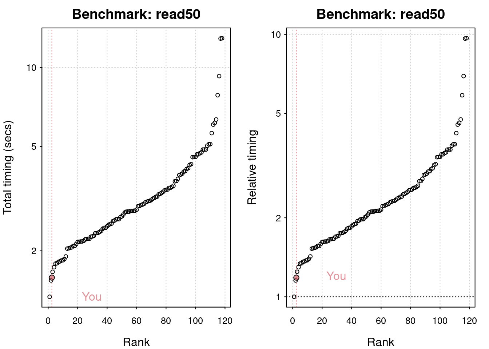
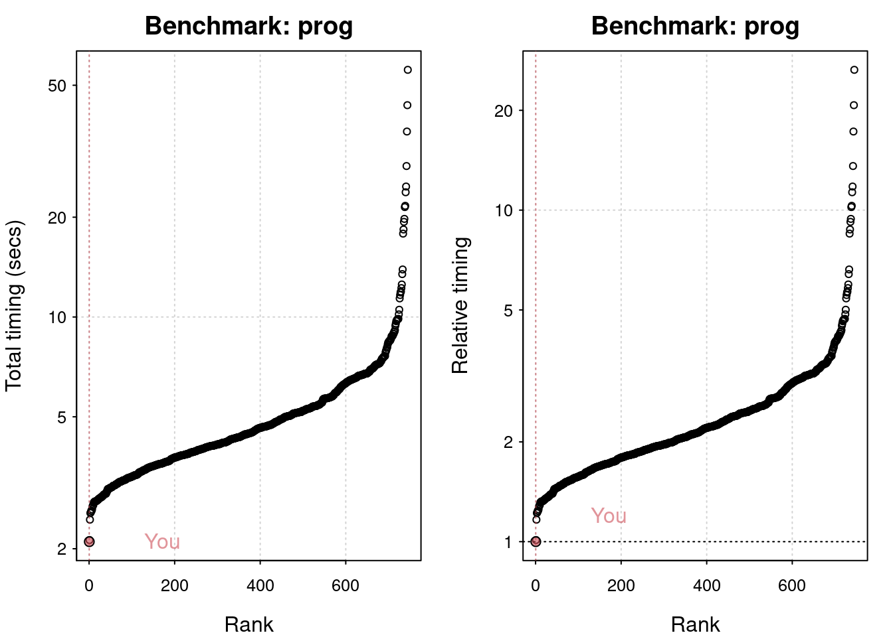
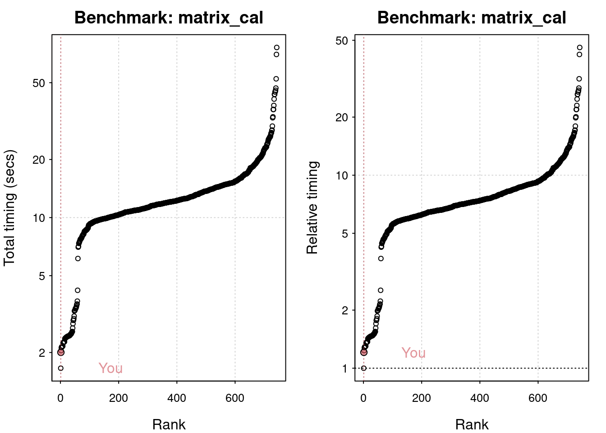
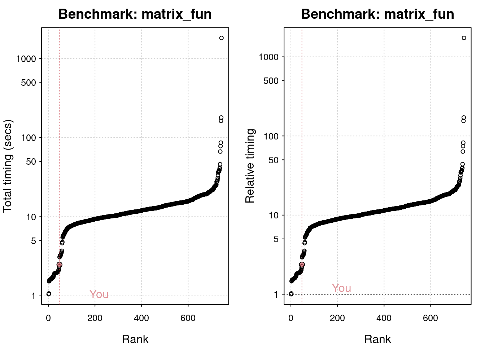

One of the relatively easy optimizations available is to use an up-to-date version of R. In general, R is very conservative, so upgrading doesn’t break existing code. However, a new version will often provide free speed boosts for key functions.
The version command returns a list that contains (among other things) the major and minor version of R currently being used.
# Print the R version details using versionversion
_
platform x86_64-pc-linux-gnu
arch x86_64
os linux-gnu
system x86_64, linux-gnu
status
major 4
minor 1.2
year 2021
month 11
day 01
svn rev 81115
language R
version.string R version 4.1.2 (2021-11-01)
nickname Bird Hippie
# Assign the variable major to the major componentmajor <- version$major# Assign the variable minor to the minor componentminor <- version$minor
Comparing read times of CSV and RDS files
One of the most common tasks we perform is reading in data from CSV files. However, for large CSV files this can be slow. One neat trick is to read in the data and save as an R binary file (rds) using saveRDS(). To read in the rds file, we use readRDS().
Note: Since rds is R’s native format for storing single objects, you have not introduced any third-party dependencies that may change in the future.
To benchmark the two approaches, you can use system.time(). This function returns the time taken to evaluate any R expression. For example, to time how long it takes to calculate the square root of the numbers from one to ten million, you would write the following:
# How long does it take to read movies from CSV?system.time(read.csv("movies.csv"))
user system elapsed
0.131 0.003 0.135
# How long does it take to read movies from RDS?system.time(readRDS("movies.rds"))
user system elapsed
0.03 0.00 0.03
Elapsed time
Using system.time() is convenient, but it does have its drawbacks when comparing multiple function calls. The microbenchmark package solves this problem with the microbenchmark() function.
# Load the microbenchmark packagelibrary(microbenchmark)# Compare the two functionscompare <-microbenchmark(read.csv("movies.csv"), readRDS("movies.rds"), times =100)# Print comparecompare
Unit: milliseconds
expr min lq mean median uq
read.csv("movies.csv") 124.06143 132.66351 147.2988 139.0496 152.97855
readRDS("movies.rds") 30.09878 31.21481 33.3113 32.3566 34.34812
max neval cld
240.20944 100 b
60.82679 100 a
My hardware For many problems your time is the expensive part. If having a faster computer makes you more productive, it can be cost effective to buy one. However, before you splash out on new toys for yourself, your boss/partner may want to see some numbers to justify the expense. Measuring the performance of your computer is called benchmarking, and you can do that with the benchmarkme package.
# Load the benchmarkme packagelibrary(benchmarkme)# Assign the variable ram to the amount of RAM on this machineram <-get_ram()ram
16.5 GB
# Assign the variable cpu to the cpu specscpu <-get_cpu()cpu
The benchmarkme package allows you to run a set of standardized benchmarks and compare your results to other users. One set of benchmarks tests is reading and writing speeds.
The function call
res = benchmark_io(runs = 1, size = 5) records the length of time it takes to read and write a 5MB file.
# Run the io benchmarkres <-benchmark_io(runs =1, size =50)
Preparing read/write io
# IO benchmarks (2 tests) for size 50 MB:
Writing a csv with 6250000 values: 3.97 (sec).
Reading a csv with 6250000 values: 1.43 (sec).
# Plot the resultsplot(res)
You are ranked 1 out of 119 machines.
Press return to get next plot
You are ranked 2 out of 119 machines.


Benchmark r operations
# Run each benchmark 3 timesres <-benchmark_std(runs =10)
Grand common divisors of 1,000,000 pairs (recursion): 0.358 (sec).
Creation of a 3,500 x 3,500 Hilbert matrix (matrix calc): 0.169 (sec).
Creation of a 3,000 x 3,000 Toeplitz matrix (loops): 0.782 (sec).
Escoufier's method on a 60 x 60 matrix (mixed): 0.554 (sec).
# Matrix calculation benchmarks (5 tests):
Creation, transp., deformation of a 5,000 x 5,000 matrix: 0.278 (sec).
2,500 x 2,500 normal distributed random matrix^1,000: 0.146 (sec).
Sorting of 7,000,000 random values: 0.524 (sec).
2,500 x 2,500 cross-product matrix (b = a' * a): 0.967 (sec).
Linear regr. over a 5,000 x 500 matrix (c = a \ b'): 0.0893 (sec).
# Matrix function benchmarks (5 tests):
Cholesky decomposition of a 3,000 x 3,000 matrix: 0.633 (sec).
Determinant of a 2,500 x 2,500 random matrix: 0.693 (sec).
Eigenvalues of a 640 x 640 random matrix: 0.287 (sec).
FFT over 2,500,000 random values: 0.171 (sec).
Inverse of a 1,600 x 1,600 random matrix: 0.573 (sec).
plot(res)
You are ranked 1 out of 749 machines.
Press return to get next plot
You are ranked 2 out of 747 machines.

Press return to get next plot
You are ranked 47 out of 747 machines.


Timings - growing a vector
Growing a vector is one of the deadly sins in R; you should always avoid it.
The growing() function defined below generates n random standard normal numbers, but grows the size of the vector each time an element is added!
Note: Standard normal numbers are numbers drawn from a normal distribution with mean 0 and standard deviation 1.
n <- 30000 # Slow code growing <- function(n) { x <- NULL for(i in 1:n) x <- c(x, rnorm(1)) x }
growing <-function(n) { x =NULLfor(i in1:n) x =c(x, rnorm(1)) x}# Use <- with system.time() to store the result as res_growsystem.time(res_grow <-growing(30000))
user system elapsed
0.646 0.000 0.647
Timings - pre-allocation In the previous exercise, growing the vector took around 2 seconds. How long does it take when we pre-allocate the vector? The pre_allocate() function is defined below.
n <-30000# Fast codepre_allocate <-function(n) { x <-numeric(n) # Pre-allocatefor(i in1:n) x[i] <-rnorm(1) x}# Use <- with system.time() to store the result as res_allocaten <-30000system.time(res_allocate <-pre_allocate(n))
user system elapsed
0.036 0.000 0.035
Vectorized code: multiplication
The following piece of code is written like traditional C or Fortran code. Instead of using the vectorized version of multiplication, it uses a for loop.
Your job is to make this code more “R-like” by vectorizing it.
x <-rnorm(10)x2 <-numeric(length(x))for(i in1:10) x2[i] <- x[i] * x[i]# Store your answer as x2_impx2_imp <- x*x
Vectorized code: calculating a log-sum
A common operation in statistics is to calculate the sum of log probabilities. The following code calculates the log-sum (the sum of the logs).
x is a vector of probabilities
total <- 0 for(i in seq_along(x)) total <- total + log(x[i]) However this piece of code could be significantly improved using vectorized code.
# Initial coden <-100total <-0x <-runif(n)for(i in1:n) total <- total +log(x[i])# Rewrite in a single line. Store the result in log_sumlog_sum <-sum(log(x))
Data frames and matrices - column selection
All values in a matrix must have the same data type, which has efficiency implications when selecting rows and columns.
Suppose we have two objects, mat (a matrix) and df (a data frame).
# Which is faster, mat[, 1] or df[, 1]? microbenchmark(mat[, 1], df[, 1])
Row timings
Similar to the previous example, the objects mat and df are a matrix and a data frame, respectively. Using microbenchmark(), how long does it take to select the first row from each of these objects?
To make the comparison fair, just use mat[1, ] and df[1, ].
Interesting! Accessing a row of a data frame is much slower than accessing that of a matrix, more so than when accessing a column from each data type. This is because the values of a column of a data frame must be the same data type, whereas that of a row doesn’t have to be. Do you see the pattern here?
# Which is faster, mat[, 1] or df[, 1]? microbenchmark(mat[1, ], df[1, ])
Profvis in action
Examine the code on the right that performs a standard data analysis. It loads and selects data, plots the data of interest, and adds in a regression line.
# Load the data setdata(movies, package ="ggplot2movies") # Load the profvis packagelibrary(profvis)# Profile the following code with the profvis functionprofvis({# Load and select data comedies <- movies[movies$Comedy ==1, ]# Plot data of interestplot(comedies$year, comedies$rating)# Loess regression line model <-loess(rating ~ year, data = comedies) j <-order(comedies$year)# Add fitted line to the plotlines(comedies$year[j], model$fitted[j], col ="red")}) ## Remember the closing brackets!